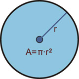

1.3.- ¿Herencia o composición?
Cuando escribas tus propias clases, debes intentar tener claro en qué casos utilizar la composición y cuándo la herencia:

- Composición: cuando una clase contenga referencias a objetos de otras clases. En estos casos se incluyen objetos de esas clases, pero no necesariamente se comparten características con ellos (no se heredan características de esos objetos, sino que directamente se utilizarán sus atributos y sus métodos). Esos objetos incluidos no son más que atributos miembros de la clase que se está definiendo.
- Herencia: cuando una clase cumple todas las características de otra. En estos casos la clase derivada es una especialización (o particularización, extensión o restricción) de la clase base. Desde otro punto de vista se diría que la clase base es una generalización de las clases derivadas.

Por ejemplo, imagina que dispones de una clase Punto (ya la has utilizado en otras ocasiones) y decides definir una nueva clase llamada Círculo. Dado que un punto tiene como atributos sus coordenadas en plano (x1, y1), decides que es buena idea aprovechar esa información e incorporarla en la clase Circulo que estás escribiendo. Para ello utilizas la herencia, de manera que al derivar la clase Círculo de la clase Punto, tendrás disponibles los atributos x1 e y1. Ahora solo faltaría añadirle algunos atributos y métodos más como por ejemplo el radio del círculo, el cálculo de su área y su perímetro, etc.
En principio parece que la idea pueda funcionar pero es posible que más adelante, si continúas construyendo una jerarquía de clases, observes que puedas llegar a conclusiones incongruentes al suponer que un círculo es una especialización de un punto (un tipo de punto). ¿Todas aquellas figuras que contengan uno o varios puntos deberían ser tipos de punto? ¿Y si tienes varios puntos? ¿Cómo accedes a ellos? ¿Un rectángulo también tiene sentido que herede de un punto? No parece muy buena idea.
Parece que en este caso habría resultado mejor establecer una relación de composición. Analízalo detenidamente: ¿cuál de estas dos situaciones te suena mejor?
- “Un círculo es un punto (su centro)” y, por tanto, heredará las coordenadas x1 e y1 que tiene todo punto. Además, tendrá otras características específicas como el radio o métodos como el cálculo de la longitud de su perímetro o el cálculo de su área.
- “Un círculo tiene un punto (su centro)”, junto con algunos atributos más, como por ejemplo el radio. También tendrá métodos para el cálculo de su área o de la longitud de su perímetro.
Parece que en este caso la composición refleja con mayor fidelidad la relación que existe entre ambas clases. Normalmente, suele ser suficiente con plantearse las preguntas “¿A es un tipo de B?” o “¿A contiene elementos de tipo B?”.